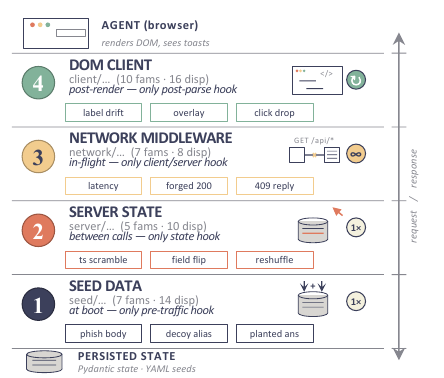
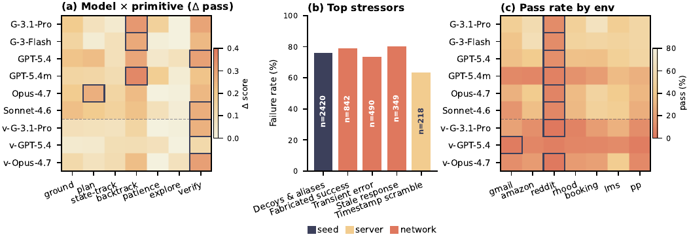
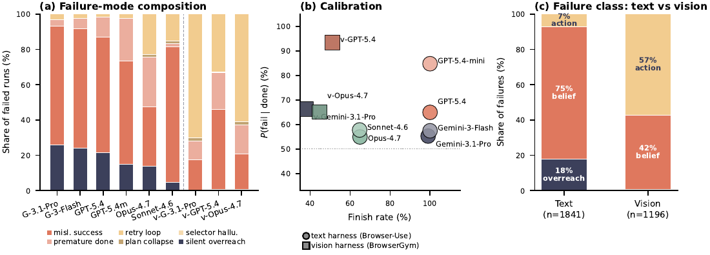

evidence (5/6)| Case | Verdict | Justification (1 ligne) |
|---|---|---|
baselines |
✅ | Baseline interne parfaitement appariée (même tâche, instruction, état initial, critère, caps ; seul l'environnement change) sur 9 configurations d'agents à snapshots nommés + 2 open-weight [Tab. headline, Tab. models-decoding]. |
ablation |
✅ | Retrait des 3 plus grosses familles (drop résiduel 10.0–19.0 %), 200 splits moitié-familles, leave-one-env-out, fusion 7→5 primitives, audit de budget 40→60 actions, dose-response fail_count [App. env-primitive, App. primitive-merge, App. controlled-studies]. |
variance |
✅ | IC bootstrap 95 % sur unités appariées (modèle, tâche), 3 rollouts indépendants (27.1 ± 1.4 / 27.6 ± 2.5), réplication 3 seeds × 56 tâches × 2 agents = 672 épisodes [Fig. results-overview(a), App. additional-models, App. controlled-studies]. |
coherence |
❌ | Deux contradictions (n=504 vs n=842 et « largest stressor » démenti par sa propre figure ; 16.2 % des runs vs 17 % des échecs) et trois sur-généralisations (29 familles dont 3 vides, « declared success » vs classe belief, « recoverable » vérifié sur 27 % du catalogue) — cf. §7.0. |
eval |
✅ | Vérifieur programmatique sur état backend, path-agnostic, aucun juge LLM, envs self-hosted jamais publiés, cible latente inaccessible à l'agent ; résolubilité humaine vérifiée (66.4 % cold / 75.0 % warm sous intervention) [§2.1, App. env-infra, §5]. ⚠️ mais aucune mesure directe de la précision du vérifieur. |
repro |
✅ | Code, 7 SPAs, évaluateur, dispatcher, 519+519 YAMLs, bundles de trajectoires et scripts régénérant chaque figure/tableau, publiés sur www.breakingweb.app (URL répond 200) [Tab. asset-card]. |
TL;DR — au lieu de collecter de nouvelles tâches pour relever la difficulté, on garde la tâche, l'instruction et le critère de succès fixes et on dégrade l'environnement : chaque tâche de base est appariée à une variante d'intervention injectée à l'une des 4 couches de la pile web (seed / server / network / client), annotée par la primitive cognitive que la récupération mobilise, et le Δ apparié clean→intervention mesure la robustesse.
Claim principal : sur 519 paires clean/intervention couvrant 7 environnements et 29 familles de stressors, les interventions font chuter le pass rate de 22.9 points en moyenne sur six agents texte (17.9–27.6) et renversent 39.6–68.0 % des tâches que chaque agent résout proprement, alors que des humains ne perdent que 10.0 pts (froid) / 5.7 pts (chaud) ; 75 % des échecs des agents texte sont des belief failures — l'agent déclare la réussite alors que l'état backend n'a jamais changé (FPR 54–85 % sur le signal done) [abstract, §3, Tab. headline, Tab. belief-vs-action].
⚠️ Papier d'évaluation, pas d'entraînement : il construit un environnement complet et RL-ready (états Pydantic typés, seeds déterministes, scoring programmatique, endpoints de contrôle) et propose explicitement de réutiliser le catalogue comme curriculum d'entraînement [§7 Conclusion], mais ne lance aucun RL.
Origine des tâches. Écrites par les auteurs, une YAML par tâche, pas de minage de traces ni de génération LLM bout-en-bout. Le contenu des couches seed et server « a été rédigé avec l'assistance d'un LLM et relu par des humains contre les cinq règles de conception » [note de bas de page §2.2]. Aucune tâche issue d'utilisateurs réels ; aucun site de production — 7 clones self-hosted.
Pipeline de construction [§2.1, App. eval-canonical, App. task-pipeline] :
1. Pour l'environnement $e$ et une graine entière $z$ : $G_e(z) \rightarrow (s_0, \tau, x)$ — état backend initial, structure cible latente $\tau$ (vue uniquement par l'évaluateur), instruction utilisateur $x$.
2. Seed program déterministe en 3 étapes : état frais avec défauts par env (devise, fuseau, profil) → seed.steps interprété dans l'ordre, chaque step appelant un builder enregistré (featured_product, three_party_thread, product_catalog…) qui mute l'état et enregistre des outputs nommés → seed.targets lie les cibles latentes à des expressions sur ces outputs (cheapest_id: "{output.product_id}").
3. Toute l'aléa vient d'un PRNG Python initialisé par la graine entière ; (task_id, seed) → état initial byte-identique [App. env-infra].
4. Le canonical_diff est écrit à la main dans la même YAML (obligations positives + invariants, cf. §3).
5. Variante d'intervention : une seconde YAML (variant_id, base_task_id, target_primitive unique, description, liste ordonnée d'injections), appariée 1-pour-1 à la tâche de base [App. variant-spec].
Volume : 519 tâches de base = 519 variants [Tab. per-env-spec]. Gmail 84, Reddit 81, Booking 78, Robinhood 71, Amazon 70, Patient Portal 70, LMS 65. Surface : 335 endpoints publics, 130 collections d'état sur 7 envs. 29 familles de stressors / 48 branches de dispatch / 4 couches ; ~60 % des variants utilisent une seule couche, le reste en empile 2 ou 3 [App. variant-spec].
Distribution de difficulté — taxonomie à 5 niveaux déclarée dans la YAML, critère opérationnel (nb de collections touchées, présence d'une obligation set-valued, lecture d'état dérivé) [Tab. difficulty] :
| Niveau | Tâches | Steps médians attendus | Critère |
|---|---|---|---|
| easy | 79 | 10 | action unique sur une collection |
| medium | 118 | 15 | édition séquentielle sur 1–2 collections, pas d'obligation set-valued |
| hard | 132 | 22 | multi-collections + ≥1 obligation set-valued |
| expert | 98 | 30 | multi-collections + lecture d'état dérivé (liste filtrée, total calculé, ranking) |
| frontier | 92 | 45 | long-horizon cross-collections, ≥3 obligations, ≥1 invariant négatif sur l'état adjacent |
Chaque env contribue 7–19 easy, 14–22 medium, 15–33 hard, 12–15 expert, 10–15 frontier. Instruction : 61.0 mots en moyenne (Gmail 103.4 → Robinhood 34.2) ; 26.4 steps attendus en moyenne [Tab. bench-stats].
Filtrage. ❗ Aucun filtrage par pass@k du modèle de base. Le slogan « construire à partir de tâches que les agents résolvent déjà » n'est PAS implémenté par une sélection : les pass rates clean vont de 33.1 % (GPT-5.4-mini) à 72.1 % (Gemini-3.1-Pro) [Tab. headline-full], donc une grande part des tâches de base n'est pas résolue proprement. Le « déjà résolu » est récupéré a posteriori par le conditionnement (« parmi les tâches que cet agent résout proprement, l'intervention en renverse 39.6–68.0 % ») et non par la construction. Conséquence : le Δ apparié total mélange tâches résolues et non résolues ; les auteurs le reconnaissent implicitement en rapportant aussi $\Delta$score continu [App. headline-full].
Filtrage des variants, lui, est humain [App. qc] : chaque variant est relu par ≥2 des 4 annotateurs contre une rubrique de pureté de primitive — (i) le variant doit charger la primitive déclarée, (ii) il ne doit pas charger une primitive que la tâche de base exerce déjà, formellement $|T_{\text{task}} \cup {p_{\text{variant}}}| \le 2$, (iii) il doit rester détectable, recouvrable, réaliste. Désaccords → troisième relecteur, tag final par consensus. Le log de construction enregistre 48 flags adjugés (9.2 % des variants, dont 43 sur des items existants) — « mesure la couverture de la revue, pas l'accord par primitive ».
Curriculum : aucun (pas d'entraînement). Les auteurs proposent en conclusion de réutiliser le catalogue comme curriculum d'interventions à l'entraînement [§7 Conclusion] — piste, non testée.
Contamination / séparation train-test : n.a. (pas d'entraînement). Côté éval, surface d'attaque réduite par construction : envs self-hosted jamais publiés auparavant, l'agent ne détient jamais le secret des endpoints /control/, aucun test-id ni hook DOM agent-facing n'est ajouté aux SPAs, et le composant React d'intervention « n'expose aucun état d'évaluateur ni la cible latente à l'agent » [App. env-infra]. ⚠️ Une fois l'env publié sur breakingweb.app, les YAMLs (donc $\tau$ et le canonical diff) sont publics → contamination future probable pour les modèles entraînés après publication.
Données SFT/IFT avant RL : n.a.
Coût humain [App. human-recruit] : 8 annotateurs en 2 tiers — 4 primary (70 task-conditions chacun = 140 tentatives cold/warm, soit 560 tentatives primaires sur les 140 tâches du panel Human-140), 4 duplicate (8–9 task-conditions chacun, 70 tentatives). Les annotateurs sont des collaborateurs de recherche, pas des crowdworkers, payés comme assistants de recherche sur les fonds du projet ; protocole enregistré IRB-exempt. Contrainte anti-fuite : un annotateur n'est jamais affecté à un env qu'il a lui-même conçu, et les conditions clean et intervention d'une même tâche vont toujours à deux annotateurs différents pour que l'intervention ne devienne pas « semi-warm ». Nombre d'heures totales : non précisé.
Deux harnesses partageant le même backend, le même catalogue tâches/variants et le même évaluateur ; seuls les octets reçus par l'agent diffèrent [App. obs-space].
Observation (texte, browser-use) [App. obs-text] : à chaque step — instruction utilisateur, dernière action, chaîne d'erreur éventuelle, URL courante, puis l'arbre d'accessibilité aplati filtré. Chaque nœud interactif porte un identifiant court bid (ex. a51). Budget d'observation plafonné à 26 000 tokens d'entrée ; au-delà, le harness supprime les tours les plus anciens et les remplace par un court résumé factuel, de sorte que le system prompt et la dernière observation restent toujours en scope. Filtres [Tab. axtree-filter] : with_clickable, with_visible, filter_visible_only (supprime off-screen / display:none / couvert), filter_with_bid_only (supprime tout nœud non adressable, donc l'agent ne peut pas viser une cible inadressable) ; strip des caractères de contrôle ASCII.
Observation (GUI-only, BrowserGym) [App. obs-pixel] : instruction + screenshot du viewport en PNG base64, rien d'autre — pas de DOM, pas d'AXTree, pas de liste d'éléments ; last_action, erreur et URL sont loggés mais non montrés au modèle. Viewport par famille de modèles : Gemini-3.x/Qwen 1280×720, Claude 1024×768, GPT-5.x 1600×900 [Tab. viewport]. Coordonnées pixel pour Anthropic/OpenAI, grille normalisée 0–1000 pour Gemini/Qwen.
Espace d'actions (BID, harness texte) [Tab. action-text] — une seule function call Python par step :
click('a51') · dblclick('12') · fill('b22','hello') · clear('b22') · focus('b22') · hover('d7') · select_option('c3','California') · press('48','Enter') · scroll(0, 300) · drag_and_drop('a1','b2') ; verbes terminaux send_msg_to_user('done'), report_infeasible('reason'), noop(1000). Tout argument bid doit être une chaîne citée issue de l'observation courante ; le harness rejette un bid numérique ou hors scope — ce qui « élimine par construction une classe d'échecs de type selector-hallucination » (et de fait ce mode compte 0 dans le sweep [Tab. modes]).
Espace d'actions (GUI-only) [Tab. action-pixel] : mouse_click(x,y), mouse_dblclick, mouse_move, mouse_drag_and_drop(x1,y1,x2,y2), keyboard_type('text'), keyboard_press('Enter'), scroll(dx,dy), go_back/go_forward + les mêmes verbes terminaux.
Multi-turn / horizon : multi-turn. Cap fixe de 40 actions et cap wall-clock spécifique au modèle 600–1 200 s, identiques entre clean et intervention de la même tâche de base ; chaque appel LLM a un timeout de 120 s. Les champs expected_steps / time_limit_seconds de la YAML sont des métadonnées de design, pas les caps du sweep. Audit de budget : le cap à 40 actions termine 27 runs sur 3 114 (0.87 %) par condition ; sur 36 runs Opus échoués au cap et rejoués à 60 actions / 2 400 s, 31 dépassent 40 actions mais 28 échouent quand même, et les 8 récupérations se répartissent également entre clean et intervention → l'écart apparié est inchangé [App. models-decoding].
Exécution [App. env-infra] : une seule application FastAPI self-hosted sert les 7 envs derrière un process. Chaque env = (SPA React, modèle d'état Pydantic typé, routeur /api/env/<env_id>). Un run est clé par un session_id opaque créé avec une tâche et une graine entière ; le session manager construit un état frais, exécute le seed builder, et stocke l'état vivant + un snapshot initial immuable pour l'évaluation. Déterminisme : même (task_id, seed) → état initial byte-identique. Deux classes d'endpoints disjointes : publics (/api/env/<env_id>, seule surface que l'agent et la SPA touchent) et contrôleurs (/control/<env_id>/<session_id>, protégés par un secret par process) réservés au harness pour appliquer les interventions, dumper le canonical diff, reset la session, lire les audit logs. Chaque run lance un Chromium headless piloté par Playwright. Reset : la session est reset au même seed (utilisé pour la paire cold/warm du panel humain). Audit logs conservés pour debug et features de trajectoire, ils n'entrent pas dans le scoring.
Les 4 couches d'injection [§2.2, App. layer-mechanics] — non redondantes par conception (« un hook réseau ne peut pas réécrire le dataset seedé, un hook client ne peut pas forger un header HTTP qui survit à un refresh, un hook serveur ne peut pas reproduire un overlay rendu côté client ») :
- seed (7 familles / 14 dispatches) : mutations de contenu une fois à la création de session, après le seed program de la tâche de base, avant le chargement de la page. Ajoute ou réécrit des entités (décoys, corps adversariaux, mises à jour contradictoires, cibles cachées). Passif une fois posé : l'agent doit lire et désambiguïser.
- server (5 / 10) : une mutation structurelle unique après la passe seed — timestamps brouillés, ordre de listes mélangé, entité prérequise cachée, notifications distractrices, corruption d'un champ sur une entité cible. Édite des entités déjà seedées (« la narration de l'état » et non son bruit de fond).
- network (7 / 8) : middleware Starlette global sur l'app FastAPI, intercepte toute requête matchante. Adressage par glob d'URL + méthode HTTP, avec compteurs d'appels par pattern : un dispatch peut tirer sur les $N$ premiers appels, tous les $k$ appels, sur une fenêtre d'indices corrélés, ou avec une probabilité $p$ seedée. Dispatches : delay, error_then_success, silent_fail, misleading_success, stale_data, concurrent_modification, rate_limit, session_expiry.
- client (10 / 16) : composant React compilé dans chaque SPA au build, inerte tant que la session n'enregistre pas de dispatch list ; accès direct au DOM rendu, à l'état React et aux métadonnées aria. Misalignment de labels, éléments décoys, overlays interceptants, clics avalés, save drift, double-submit traps, loaders bloqués.
Répartition des 963 injection records par couche [Tab. coverage-layer-prim] : seed 361, network 360, server 102, client 39. Concentration forte : 3 familles (Decoys & aliases 294, Fabricated success 210, Stale response 62) = 566 records, >60 % du total [Tab. family-inventory]. Les cellules vides (server×backtracking, client×backtracking) sont voulues : « les interventions de backtracking exigent un feedback au runtime (401, 409, 5xx sur la tentative de récupération) que seule la couche réseau peut délivrer ».
Gestion des erreurs : chaque résultat de step porte un status du harness ; status="error" marque un step non exécutable (clic sur un bid périmé, fill sur un non-input) et l'erreur est réinjectée dans l'en-tête de l'observation suivante (last_action_error). Sorties mal formées : réponse non parsable → terminaison harness, labellisée abandoned_run, mais l'état backend final est quand même scoré [App. modes-examples]. L'épuisement de budget n'est pas automatiquement un échec : l'évaluateur score l'état final quelle que soit la terminaison [App. action-space].
Exemple de trajectoire — observation texte, amazon_browse_category, step 3 [Tab. obs-text-example] :
## goal: Browse the Electronics category, find the cheapest item available, and
add it to your cart.
## last_action: click('a14')
## last_action_error:
## url: http://localhost:8000/env/amazon/category/electronics?sort=price-asc
---
RootWebArea "Amazon -- Electronics"
[a3] navigation "Primary"
[a5] link "Home"
[a6] link "Cart (0)"
[a10] heading "Electronics"
[a11] combobox "Sort by" value="Price: low to high"
[a20] list
[a21] listitem
[a22] link "USB-C Charging Cable 6ft"
[a23] StaticText "$7.99"
[a24] StaticText "4.3 (820 reviews)"
[a25] button "Add to cart" clickable
...
System prompt texte, verbatim partiel [Lst. prompt-text] — noter la règle 5 : 5. Before calling send_msg_to_user, verify the task is actually complete. ❗ La consigne de vérification est donc déjà dans le prompt, et 54–85 % des done restent des faux positifs : le problème n'est pas l'absence d'instruction.
Canonical-diff scoring, purement outcome-based sur l'état backend [§2.1, App. eval-canonical]. L'évaluateur compare le diff structurel $\Delta(s_0, s_T) \in {\textsc{Create}, \textsc{Update}, \textsc{Delete}}^$ (snapshot initial immuable vs final, trié par entity ID pour un ordre déterministe) à un canonical diff $D=(P,N)$ déclaré par la tâche* :
$$\mathrm{score} = \mathrm{clip}{[0,1]}\left(\frac{\sum w_p \rho_p}{\sum_{p\in P} w_p} - \sum_{n\in N:\neg n} \lambda_n\right)$$
pass = score $= 1.0$ et aucune pénalité ; mean score = score moyen avec crédit partiel.Trois propriétés qui comptent : (i) la tâche est spécifiée par son effet sémantique, pas par une trajectoire UI de référence — « une tâche de tri Gmail peut être résolue par recherche, par labels, ou par navigation par thread » ; (ii) le score ignore totalement la déclaration de l'agent ; (iii) un write silencieusement perdu (toast « Saved » forgé sans mutation) enregistre un échec même si la page annonce le succès [§2.1]. C'est précisément ce qui rend la famille Fabricated success mesurable.
Granularité : outcome, crédit partiel au niveau de l'obligation. Pour les obligations set-valued (« marquer les 5 e-mails non lus », « une commande par action qui passe le filtre »), le scoring est un couplage biparti maximum entre les slots cibles $V={v_1..v_m}$ et les entrées du diff $C={c_1..c_n}$, arête $(v_i,c_j)$ ssi $c_j$ satisfait les prédicats de clause avec la variable de boucle liée à $v_i$. La clause passe ssi $|M^\star| = m$, crédit partiel $\rho_p = |M^\star|/m$. Permutation-invariant mais cardinality-sensitive : rejette entrées manquantes, cibles dupliquées, champs numériquement faux. Les auteurs justifient explicitement le choix contre une agrégation faible : « un check du type il y a k nouvelles entrées accepterait des doublons ou des entrées hors cible » [App. eval-canonical]. Exemple travaillé [App. canonical-example] : 4 e-mails sur 5 → couplage de taille 4, crédit partiel mais clause échouée ; 5 corrects + 1 distracteur togglé → obligations satisfaites mais invariant sur les non-cibles pénalisé.
Grammaire de prédicats — 19 verbes admis, entièrement imbriquable (les verbes fields, length, not, all_of, any_of récursent avec un scope décalé) [Tab. predicate-grammar] : scalaires eq (égalité floue qui snappe les chaînes numériques), in, between, any, expr ; collections set_eq, subset, superset, contains, length ; texte substring, substring_all, substring_any, regex, matches_semantic (ratio SequenceMatcher, seuil 0.8 par défaut) ; structurel fields ; logiques not, all_of, any_of. expr est le seul prédicat à syntaxe Python, évalué sous une allowlist AST qui interdit l'accès aux attributs dunder, les imports et la plupart des builtins, exposant seulement x (entité liée), target (vérité latente), initial / state, v (variable de boucle du couplage) et session_start. Tous les autres prédicats sont des données pures sans sandbox.
Exemple complet (tâche amazon_browse_category, verbatim) [Lst. worked-task] :
canonical_diff:
create:
- entity: CartItem
desc: Cheapest Electronics product added to cart
properties:
product_id: {expr: "x == target['cheapest_id']"}
quantity: {eq: 1}
product_name: {expr: "x == target['cheapest_name']"}
unit_price: {any: true}
variant_selections: {any: true}
added_at: {any: true}
invariant:
- {collection: state.cart_items,
filter: "a.product_id != target['cheapest_id']", preserve: ALL}
- {collection: state.products, preserve: ALL}
- {collection: state.addresses, preserve: ALL}
- {collection: state.payment_methods, preserve: ALL}
- {collection: state.orders, preserve: ALL}
- {collection: state.returns, preserve: ALL}
Termes additionnels : pas de reward de format, pas de pénalité de longueur, pas de bonus. Seules pénalités = violations d'invariants, pondérées par sévérité ($\lambda_n$ ; les valeurs de $\lambda$ et de $w_p$ ne sont pas données → non précisé). Pas de juge LLM nulle part dans le scoring.
Paramètre manipulé : l'environnement seul. L'instruction $x$, la cible latente $\tau$ et le canonical diff $D=(P,N)$ sont identiques entre les deux conditions ; seules la couche d'injection, la famille et les paramètres de dispatch changent [§2.1]. La difficulté n'est donc pas un scalaire mais un triplet (couche × famille × params) ; une seule famille a un paramètre de dose ordonné validé : fail_count, le nombre de writes initiaux interceptés par une fabricated-success — le pass rate décroît monotoniquement de 0 à 3 sur les trois agents texte testés [App. controlled-studies]. À l'inverse, decoy_k (nombre de quasi-duplicats) ne produit pas de courbe agrégée monotone et les auteurs refusent de s'en servir comme dose-response : « des décoys supplémentaires modifient la mise en page, le tri et le candidat qui apparaît en premier — decoy_k change l'instance autant que la quantité de bruit ». ✅ Honnêteté notable.
Le vérifieur résiste par construction, et c'est le point d'architecture le plus réutilisable du papier : il ne lit que le diff d'état backend, jamais le DOM, jamais la réponse HTTP. Une intervention réseau qui forge un 200 {toast: "Saved."} ne touche pas l'état scoré → la fabricated success est mécaniquement une faille d'agent et non une faille de vérifieur. De même, les endpoints de contrôle sont derrière un secret que l'agent ne détient pas, et le composant d'intervention client « n'expose aucun état d'évaluateur ni la cible latente » [App. env-infra].
⚠️ Deux brèches non traitées par le papier, exactement sur la couture durcissement/vérifieur :
1. La couche server « corrompt un champ sur une entité cible » (famille Field corruption, dispatch modify_response, 3 records) [App. layer-mechanics, Tab. family-inventory] — or c'est l'état même que les prédicats d'obligation lisent (x == target['cheapest_id']). Le papier ne dit nulle part comment il garantit que l'obligation reste satisfaisable après une corruption de champ cible. Non précisé.
2. L'ordre exact entre l'application de la couche seed et la prise du snapshot initial immuable n'est pas explicité : App. A.1 dit que le session manager « exécute le seed builder de la tâche puis stocke l'état vivant et un snapshot initial immuable », et §2.2 que la couche seed mute « une fois à la création de session, après que le seed program de la tâche de base a peuplé l'environnement ». Si le snapshot était pris avant l'injection seed, les entités décoys apparaîtraient comme des Create violant les invariants preserve: ALL (ex. state.products) et tous les variants seed échoueraient mécaniquement. Les résultats montrent que ce n'est pas le cas, donc l'ordre est forcément snapshot-après-injection — mais le papier ne l'énonce pas. Non précisé ; à vérifier dans le code si on s'inspire du design.
Comment on vérifie que la tâche reste résoluble et bien spécifiée — cinq garde-fous, d'inégale force :
1. Règle de conception « recoverable » appliquée à l'admission : « un agent compétent contourne la dégradation en un nombre borné d'actions supplémentaires, de sorte que les interventions filtrent la capacité plutôt que de bloquer la tâche » ; justification explicite : « un variant qui bloquerait franchement la tâche bloquerait aussi le run clean et ne produirait pas de Δ apparié » [App. invariant-justification]. Implémentation effective : une fois fail_count appels servis, le middleware laisse passer les requêtes non modifiées — la borne est dans le code, pas seulement dans la rubrique [App. family-deep-dive].
2. Règle « detectable » : l'état dégradé doit rester observable via le DOM, le statut HTTP ou la relecture de formulaire — « si l'état dégradé était invisible, le variant testerait la chance et non la capacité » [App. invariant-justification].
3. Revue humaine ≥2/4 annotateurs par variant contre la rubrique pureté + détectabilité + recouvrabilité + réalisme, désaccord → 3ᵉ relecteur [App. qc].
4. Human-140 : le panel humain est présenté explicitement comme le check de résolubilité (« First, they check that the selected tasks are solvable by competent users under both clean and intervention conditions » [§5]). Résultat : 66.4 % cold / 75.0 % warm sous intervention (vs 76.4 / 80.7 clean) [Tab. human-headline] → la tâche reste résoluble. ⚠️ Mais seulement sur 140 des 519 tâches (27 %), panel équilibré 4 par cellule (env × difficulté) ; les 379 autres tâches n'ont aucune vérification humaine de résolubilité.
5. Instrument de notation post-tâche [Tab. rubric] : 4 items Likert 1–5 — Clarity (« l'instruction était-elle compréhensible telle qu'écrite ? »), Realism, Fun/demo value, Intervention naturalness (« la complication ressemblait-elle à quelque chose qu'un vrai utilisateur pourrait rencontrer ? ») — plus 4 flags binaires : suspected bug (« l'évaluateur a échoué sur ce qui ressemblait à un succès propre, ou l'intervention s'est comportée de façon inattendue »), ambiguous instruction (« l'instruction pouvait raisonnablement se lire de plusieurs façons »), alternate valid strategy, commentaires libres. Les flags déclenchent un triage Slack par l'annotateur lead. ❗ Les taux de ces flags ne sont jamais rapportés — on sait seulement que 48 flags ont été adjugés côté construction (9.2 % des variants) [App. qc]. C'est la mesure la plus directe de « la tâche reste-t-elle correctement spécifiée après durcissement » et elle manque. Non précisé.
Aucune mesure directe de la précision de l'évaluateur (pas de taux de faux positifs / faux négatifs du canonical diff, pas d'accord évaluateur-humain sur un échantillon de trajectoires). Non précisé. Preuves indirectes disponibles :
- Audit de duplication [Tab. duplicate-audit] : 35 task-conditions dupliquées (une par cellule env×difficulté), 70 tentatives par 4 annotateurs non-concepteurs. Accord de succès warm par paire : 68.6 % ; ratio médian d'événements bruts warm entre duplicats : 1.58 ; 28.6 % des paires à moins de 1.25×, 42.9 % à 1.5×, 71.4 % à 2.0× ; 6 paires où le duplicat a trouvé un chemin valide strictement plus court ; 11 task-conditions envoyées en adjudication. ⚠️ 68.6 % d'accord entre deux humains compétents sur la même task-condition est bas : soit variance humaine, soit spécification ambiguë résiduelle — le papier n'en départage pas les causes et prévient explicitement que « l'audit estime la stabilité agrégée de la référence warm, ce n'est pas une étude complète de variance inter-annotateurs » [App. human-panel-design].
- Effets annotateur [Tab. annot-effects] : pass rate cold clean de 60.0 % (A4) à 88.6 % (A1) ; warm compressé à 74–86 % clean et 71–80 % intervention. Les analyses utilisent des moyennes par tâche non pondérées pour ne pas amplifier cet écart.
- Le silent_overreach tire effectivement (336 runs sur 3 037) [Tab. modes] : la branche invariants du vérifieur n'est pas décorative.
- Seuil de pass : abaisser le seuil de succès de 1.0 à 0.5 conserve 16.6 des 22.9 points de drop strict → « le résultat n'est pas porté uniquement par des runs quasi complets qui franchissent la frontière de pass » [§3].
- Ordre pass-rate vs score : les drops en pass rate et en score induisent le même ordre sur les 7 cellules macro-primitives (Spearman $\rho = 1.0$) [§3].
Si juge LLM : aucun dans le scoring. Deux usages de LLM ailleurs, à ne pas confondre : (i) rédaction assistée du contenu seed/server, relue par des humains [note §2.2] ; (ii) aucun pour la classification des failure modes, qui est un classifieur à règles (§5).
Robustesse / attaques : le vérifieur n'a pas été attaqué par une politique entraînée (il n'y en a pas). ⚠️ Surface d'attaque évidente pour un futur RL : les prédicats flous — matches_semantic à seuil 0.8, eq à égalité numérique floue, substring / substring_any — récompensent une correspondance approximative de champ texte ; un policy gradient apprendrait vite à remplir le champ avec la chaîne minimale franchissant 0.8. Non testé ici.
n.a. — aucun entraînement : ni RL, ni SFT, ni DPO. Pas d'algorithme, pas de KL, pas d'advantage, pas de LR. Les six agents sont des backbones API sous prompt fixe.
Ce qui en tient lieu — réglages d'inférence [Tab. models-decoding] : claude-opus-4-7, claude-sonnet-4-6 (Anthropic/Bedrock, température par défaut) ; gpt-5.4, gpt-5.4-mini (OpenAI, température omise du kwarg car la famille GPT-5.x ignore toute valeur non-défaut, reasoning_effort=medium) ; gemini-3.1-pro, gemini-3-flash-preview (Google, température par défaut). max_tokens=4096 pour tous. Pas de mémoire entre tâches ni entre conditions ; trimming de conversation selon le contrat 26 000 tokens. La route Gemini tourne sur plusieurs clés API sur 429/503 ; OpenAI et Anthropic utilisent le backoff exponentiel du SDK ; tout appel LLM dépassant 120 s est abandonné et le harness passe au step suivant.
Les « checks contrôlés » jouent le rôle d'étude de stabilité du benchmark [App. controlled-studies] — les auteurs reconnaissent que « le benchmark complet fait varier tâches, sites, couches et familles en même temps » :
- Intervention strength : fail_count 0→3, pass rate monotone décroissant sur 3 agents texte ; decoy_k non monotone, non utilisé comme dose (cf. §3.2).
- Composition de deux mécanismes : sur 60 tâches et 3 agents texte, croisement de deux mécanismes binaires (décoys quasi-dupliqués × fabricated success). Interaction poolée +6.1 % en pass rate, IC 95 % [−2.2 %, +14.4 %] → « la condition combinée est dure, mais cette étude ne montre pas d'interaction superadditive fiable ; les variants multi-couches du catalogue principal doivent être lus comme des conditions composées réalistes, pas comme des estimations de synergie ». ✅ Formulation prudente et correcte.
- Réplication par seed : 56 tâches × 3 seeds × 2 agents texte = 672 épisodes ; le drop clean→intervention est positif dans les 6 cellules modèle×seed et son IC exclut zéro dans 5 sur 6.
- Rollouts indépendants : 3 rollouts sur le même sous-ensemble stratifié de 140 tâches → Opus-4.7 27.1 ± 1.4 %, Sonnet-4.6 27.6 ± 2.5 % de drop apparié ; backtracking et verification sont tous deux dans le top-3 dans 5 des 6 cellules modèle-rollout [App. additional-models].
Compute : cf. §6.
Classifieur déterministe à règles, appliqué à tout run d'intervention échoué (score < 1.0 ou invariant négatif violé), six modes mutuellement exclusifs, l'ordre des règles compte [Alg. mode-classifier, App. modes-rules] :
1. si (tous les checks positifs passent) ET (un invariant négatif échoue) → silent_overreach
2. si (finit par un verbe done) ET (checks positifs échoués) ET (mot-clé de succès dans la dernière pensée) → misleading_success_taken
3. si (finit par un verbe done) ET (checks positifs échoués) → premature_done
4. si (signature d'action répétée max ≥ 5) → retry_loop
5. si (nb de steps en status=error ≥ 3) → selector_hallucination
6. si (longueur du run ≤ 5) ET (aucun verbe done) → plan_collapse
sinon → abandoned_run (halts harness, exclus de l'analyse à six modes)
Features : verbe de l'action terminale, signature d'action répétée maximale (arguments signés en droppant la valeur : fill('b22','foo') → fill("b22")), compteur de steps status="error", checks positifs échoués, checks négatifs collatéraux, et scan de mots-clés sur la dernière pensée : saved, success, successfully, submitted, confirmed, added, starred [App. modes-defs].
| Mode | Count (9 agents, n=3 037) |
|---|---|
misleading_success_taken |
1 454 |
retry_loop |
790 |
premature_done |
433 |
silent_overreach |
336 |
plan_collapse |
24 |
selector_hallucination |
0 |
(a) Belief failure / misleading_success_taken — le mode dominant.
- Comportement : l'agent émet send_msg_to_user en reformulant confidemment un succès que l'état backend contredit. 52–68 % des échecs sur chaque agent texte ; classe belief 61.6–82.7 % par modèle, 75 % en agrégé texte [Fig. failure-landscape(a,c), Tab. belief-vs-action].
- Détection : par construction du vérifieur — le score ne lit que l'état backend, donc la déclaration de l'agent est directement falsifiable. Puis quantifiée par la FPR sur le signal done : 54 % (Gemini-3.1-Pro), 57 % (Flash), 65 % (GPT-5.4), 85 % (GPT-5.4-mini), 55 % (Opus-4.7), 58 % (Sonnet-4.6). Cinq agents sur six terminent près de 100 % des runs d'intervention ; Sonnet-4.6 n'en termine que 65 % mais sa FPR (58 %) n'est pas meilleure — « mieux calibré sur quand s'arrêter, et toujours faux sur plus de la moitié des runs qu'il déclare ».
- Correction : aucune appliquée (papier d'éval). Le remède identifié par les auteurs est un post-action verification re-read : re-fetch de l'état externe avant de faire confiance à son propre done. Ils notent que le budget de steps n'est pas le problème (« ils ont déjà terminé »).
- ⚠️ Mon évaluation : la règle 5 du system prompt demande déjà explicitement de vérifier avant send_msg_to_user. Le prompting ne suffit donc pas — argument fort pour en faire un comportement entraîné.
(b) silent_overreach — dégâts collatéraux sur l'état protégé. 336 runs ; les obligations positives passent, un invariant négatif saute. Concentré sur Robinhood (39.9 % des échecs de cet env) et Reddit (25.7 %) [Tab. env-mode], et par primitive sur state tracking (85) et verification (57) [Tab. mode-by-primitive] — « les primitives où les dégâts collatéraux sur l'état non-cible sont le plus difficiles à détecter depuis le DOM rendu ». Exemple canonique : « Marked the five unread emails as read » avec les 5 cibles correctes plus un distracteur déjà lu re-togglé [App. modes-examples]. C'est le plus proche d'un sur-apprentissage de l'obligation au détriment de la contrainte — mécaniquement l'équivalent d'un reward hacking partiel, capté uniquement parce que les invariants existent.
(c) retry_loop — le mode des agents GUI-only. 790 runs ; 33–72 % des échecs des trois agents GUI-only, contre 1.8–24.5 % pour les agents texte. Concentré par primitive sur patience : « quand un agent lit lent comme échoué, il réessaie » [App. mode-by-primitive]. Inversion nette de modalité : les agents texte terminent avec une croyance fausse, les agents GUI-only n'atteignent jamais un état terminal cohérent (belief 42 % / action 57 % en GUI vs 75 % / 7 % en texte) [Fig. failure-landscape(c)].
(d) selector_hallucination = 0. Deux raisons cumulées : la grammaire BID rejette les bid numériques ou hors scope, donc la classe est éliminée par construction ; et quand elle se produirait, la trajectoire matche d'abord retry_loop ou plan_collapse [App. modes-examples]. ✅ Exemple propre d'un failure mode supprimé par le design de l'espace d'actions plutôt que par l'entraînement.
(e) Récupération tentée mais ratée, pas évitée. Sur les variants ciblant le backtracking, les runs échoués sont plus longs que les runs réussis pour tous les modèles appariés (+5 steps en moyenne ; Flash +5.2, Opus +2.7, Gemini-3.1-Pro +1.8, mini +0.7, GPT-5.4 +0.0) [Tab. step-economy]. Même chez les humains : les tentatives warm échouées sous intervention coûtent ~+25 événements bruts de plus que les réussies [§5]. Le déficit n'est pas « l'agent ignore le problème » mais « l'agent s'y attaque et se trompe ».
(f) Fragilité auto-déclarée du classifieur [App. modes-robust] : la frontière misleading_success_taken / premature_done repose sur un scan de mots-clés et est « donc fragile à des reformulations mineures » (« I have completed this task » → premature_done ; « I have submitted the form » → misleading_success_taken). Les auteurs traitent explicitement le compte combiné (classe belief) comme la quantité robuste et le split comme un signal qualitatif. ✅ Honnête — mais cela affaiblit la formulation de l'abstract (cf. §7.0).
Aucun cas rapporté, et c'est crédible vu la conception : (i) le vérifieur lit l'état backend d'un snapshot immuable, pas le DOM ni la réponse HTTP ; (ii) l'agent ne détient pas le secret des endpoints /control/, donc ne peut ni appliquer/annuler une intervention, ni dumper le canonical diff, ni lire $\tau$ ; (iii) aucun test-id ni hook DOM agent-facing n'est ajouté aux SPAs ; (iv) expr tourne sous allowlist AST côté évaluateur, pas côté agent. ⚠️ Mais la question n'est pas réellement testée : sans politique entraînée, personne n'a cherché à exploiter matches_semantic à 0.8, l'eq numérique floue, ou les prédicats {any: true} abondants dans le canonical diff travaillé (unit_price, variant_selections, added_at sont tous any).
| Modèle | Done | Pass | Médiane s | Moyenne s | p90 s | Total h |
|---|---|---|---|---|---|---|
| Gemini-3.1-Pro | 1038 | 58.3 % | 189 | 240 | 515 | 69.3 |
| Gemini-3-Flash | 1038 | 52.9 % | 98 | 128 | 260 | 36.8 |
| GPT-5.4 | 1038 | 48.2 % | 129 | 165 | 364 | 47.7 |
| GPT-5.4-mini | 1038 | 24.2 % | 61 | 78 | 154 | 22.6 |
| Opus-4.7 | 1038 | 43.1 % | 498 | 534 | 999 | 154.0 |
| Sonnet-4.6 | 1038 | 39.2 % | 692 | 783 | 1305 | 225.6 |
| v-Gemini-3.1-Pro | 1038 | 18.8 % | 438 | 378 | 590 | 107.0 |
| v-GPT-5.4 | 1038 | 6.3 % | 177 | 167 | 283 | 47.5 |
| v-Opus-4.7 | 1038 | 22.9 % | 214 | 183 | 278 | 51.9 |
⚠️ Facteur 10 entre modèles sur le temps par trajectoire (61 s pour GPT-5.4-mini, 692 s pour Sonnet-4.6) : pour un usage RL, le coût de rollout est dominé par le backbone, pas par l'environnement.
- Coût en $ : explicitement refusé. Les comptes de tokens facturés sont stockés à côté de chaque trajectoire mais non agrégés, « parce que les totaux dépendent d'une comptabilité côté provider que nous ne redistribuons pas » ; le coût est reconstructible depuis les logs de réponses publiés et les tarifs providers. ✅ Position défendable, mais cela empêche toute comparaison coût/point de drop.
- Déterminisme / reset : (task_id, seed) → état initial byte-identique ; reset de session via endpoint contrôleur (utilisé pour la paire cold/warm humaine, qui ré-exécute la même task-condition au même seed 42).
| Chiffre annoncé | Où il est annoncé | Source dans le papier | Verdict |
|---|---|---|---|
| « interventions cut agent pass rate by 22.9 % on average » | abstract | Tab. 1, colonne Total des 6 agents texte : 27.6 / 20.6 / 26.2 / 17.9 / 22.9 / 22.2 → moyenne = 137.4/6 = 22.9 | confirmé (ce sont des points de pourcentage, pas un %, malgré la notation) |
| « pass rate falls by 17.9–27.6 percentage points » | §1 | Tab. 1 (min GPT-5.4-mini 17.9, max Gemini-3.1-Pro 27.6) | confirmé |
| « overturn nearly half of the tasks each agent solves cleanly » / « 39.6–68.0 %, 49.4 % en moyenne » | abstract, §1, §3 | §3 donne la fourchette et nomme 41.7 % (Gemini-3.1-Pro) et 68.0 % (GPT-5.4-mini) | confirmé pour la moyenne et la borne haute ; ⚠️ le modèle à 39.6 % n'est nommé nulle part et le chiffre n'est pas retrouvable dans un tableau → borne basse introuvable |
| « humans lose 10.0 % on a first attempt and 5.7 % after one familiarisation » | abstract | Tab. human-headline : clean cold 76.4 → interv. cold 66.4 (−10.0) ; clean warm 80.7 → interv. warm 75.0 (−5.7) |
confirmé |
| « 75 % of the six agents' failures end with a declared success although the required change never happened » | abstract | Fig. failure-landscape(c) : 75 % belief sur n=1 841 (texte). Mais la classe belief = misleading_success_taken (1 454) + premature_done (433), et premature_done est défini comme « finit sans revendiquer le succès » / « ne contient aucun mot-clé de succès » [Tab. modes, App. modes-examples]. Le sous-mode qui déclare effectivement le succès pèse 52–68 % des échecs [§4] |
sur-généralisé : vrai pour la classe belief (= « a émis done »), faux pour la lecture littérale « declared success » |
| « 29 intervention families » | abstract, §2.2 | Tab. family-inventory liste bien 29 familles, mais 3 ont 0 record dans le catalogue publié (Split information seed, Rate limit et Session expiry network) — « implémentées et passant les tests de dispatch, listées pour complétude » | sur-généralisé : 26 familles réellement peuplées |
« The largest stressor is network/fabricated_success : n=504, 16.2 % des runs d'intervention, taux d'échec 0.70, supérieur à toute autre famille de taille comparable » |
§3 | Fig. results-overview(b) (classement par failure mass = n × taux d'échec) annote n=842 pour Fabricated success et n=2 420 pour Decoys & aliases, barre à ~0.79 vs ~0.76 (hauteurs lues sur la figure) | contredit : le n diffère (504 vs 842 — périmètre d'agents différent, non explicité) et, selon la métrique de classement de la figure elle-même, c'est Decoys & aliases qui domine la masse d'échecs |
| « this family alone accounts for 17 % of all failures at a 0.70 hit rate » | App. C.4 | §3 dit 16.2 % des runs d'intervention — pas des échecs | contredit (deux dénominateurs différents pour un chiffre quasi identique ; au moins l'un des deux est faux) |
« false-positive rates of 54–85 % among runs ending with done » |
§1, §4, §6 | Tab. 3, colonne FPR : 54 / 57 / 65 / 85 / 55 / 58 | confirmé |
| open-weight : « reduce pass rate by 14.3 and 12.1 % » | §3 | Tab. open-weight : Kimi-K2.5 32.4→18.1 (Δ 14.3, IC [10.0, 18.5]) ; Qwen3-VL-235B 21.2→9.1 (Δ 12.1, IC [8.9, 15.6]) | confirmé |
| « interventions are deterministic, detectable and recoverable » | abstract | Déterminisme : seed → état byte-identique [App. env-infra] ✅. Détectabilité et recouvrabilité : règles d'admission + revue humaine [App. invariant-justification, App. qc], borne de code pour fail_count [App. family-deep-dive], résolubilité humaine vérifiée sur 140/519 tâches (27 %) [§5] |
sur-généralisé : propriétés garanties par construction et par revue, vérifiées empiriquement sur un quart du catalogue seulement |
| « Opus-4.7 / Sonnet-4.6 : drops de 27.1 ± 1.4 et 27.6 ± 2.5 % sur 3 rollouts » | App. D.2 | Tab. 1 donne 22.9 (Opus) et 22.2 (Sonnet) sur les 519 tâches | confirmé mais non comparable : les rollouts portent sur un sous-ensemble stratifié de 140 tâches, pas sur le catalogue complet — l'écart de ~4–5 pts n'est pas commenté |
Pass rate clean → intervention (519 paires, harness texte) [Tab. headline-full] :
| Modèle | Clean | Interv. | Δp | Δscore | Pire primitive (Δp) |
|---|---|---|---|---|---|
| Gemini-3.1-Pro | 72.1 | 44.5 | 27.6 | 0.18 | verification 39.4 |
| Gemini-3-Flash | 63.2 | 42.6 | 20.6 | 0.14 | backtracking 35.4 |
| GPT-5.4 | 61.3 | 35.1 | 26.2 | 0.20 | verification 36.6 |
| GPT-5.4-mini | 33.1 | 15.2 | 17.9 | 0.18 | backtracking 36.6 |
| Opus-4.7 | 54.5 | 31.6 | 22.9 | 0.19 | verification 32.4 |
| Sonnet-4.6 | 50.3 | 28.1 | 22.2 | 0.20 | grounding 29.8 |
| v-Gemini-3.1-Pro | 28.1 | 13.1 | 15.0 | 0.11 | verification 28.2 |
| v-GPT-5.4 | 10.2 | 5.6 | 4.6 | 0.07 | verification 14.1 |
| v-Opus-4.7 | 33.7 | 15.8 | 17.9 | 0.15 | verification 33.8 |
| Humains cold | 76.4 | 66.4 | 10.0 | — | grounding 13.3 |
| Humains warm | 80.7 | 75.0 | 5.7 | — | grounding 15.6 |
Pas de transfert entre environnements au sens RL (aucun entraînement). Les analyses les plus proches : - Leave-one-environment-out : classements Spearman $\rho = 0.86$–$1.00$ [App. env-primitive]. - Généralisation de la construction à des modèles non ciblés : les deux agents open-weight (Kimi-K2.5, Qwen3-VL-235B) chutent aussi (14.3 / 12.1 pts), avec backtracking et verification parmi leurs plus gros drops — « test de généralisation qualitatif » vu leurs bases clean plus faibles [App. additional-models]. - Généralisation de la construction à une autre modalité : le même catalogue applique une perte aux agents GUI-only, mais le profil de failure modes s'inverse (belief 75 %→42 %, action 7 %→57 %). Le signal d'une intervention dépend donc du harness, pas seulement de la tâche. - Les déficits verification/backtracking ne sont pas spécifiques à un env : ils apparaissent dans tous les envs qui embarquent des variants les ciblant [Tab. env-primitive] → « propriété de primitive, pas propriété d'environnement ». - Transférabilité du cadre hors web : affirmée, non testée — « les sept primitives ne sont pas web-spécifiques ; ce qui l'est, c'est l'appareil d'injection à 4 couches. Transférer le catalogue à des agents OS ou IDE préserverait le jeu de primitives mais exigerait une nouvelle décomposition en couches adaptée à cette surface d'action » [App. invariant-justification].
| Ablation | Résultat | Ce que ça isole |
|---|---|---|
| Retrait des 3 plus grosses familles | chaque modèle texte garde 10.0–19.0 % de drop [App. env-primitive] | le résultat n'est pas porté par Decoys + Fabricated success + Stale response seules |
| Macro-moyennes équilibrées (primitive et env) | diffèrent de < 3 % de la micro-moyenne [§3, App. env-primitive] | pas un artefact de composition du catalogue |
| 200 splits aléatoires moitié-familles | backtracking et verification restent top-3 dans 81 % [§3] | stabilité du groupe de tête (les auteurs précisent : pas de chaque rang) |
| Fusion 7 → 5 primitives | ordre préservé (Recovery 0.286 > Grounding 0.191 > State reasoning 0.178 > Search/Planning 0.100 > Temporal 0.085) ; mais state tracking et verification diffèrent de 0.156 unités de score / 18.3 pts, planning et exploration de 0.139 / 10.3 pts [App. primitive-merge] | « le headline n'est pas un artefact du choix de sept labels » ✅ ; et justification de garder 7 |
| Seuil de pass 1.0 → 0.5 | conserve 16.6 des 22.9 pts | pas un effet de frontière |
| 224 variants sans scaffolding | verification et backtracking restent les deux plus gros drops (31.8 / 29.2 %) [App. qc] | le drop ne vient pas du scaffolding multi-couches |
| Cohortes naturelles décoy-seul / silent-fail-seul / combiné | 4.8 % / 51.5 % / 57.1 % de drop — « diagnostic d'additivité, pas une preuve causale randomisée » [App. qc] | la fabricated success est le moteur dominant |
| Budget 40→60 actions, 600→2 400 s sur 36 échecs Opus au cap | 28/36 échouent encore ; 8 récupérations réparties également clean/interv. | le drop n'est pas un artefact de budget |
| 3 seeds × 56 tâches × 2 agents (672 épisodes) | drop positif dans 6/6 cellules, IC excluant 0 dans 5/6 | l'effet survit au re-seeding des entités et de l'état initial |
fail_count 0→3 |
pass rate monotone décroissant sur 3 agents | dose-response réelle sur une famille |
| Composition décoy × fabricated success (60 tâches, 3 agents) | interaction +6.1 %, IC [−2.2, +14.4] | pas de superadditivité fiable — déclaré comme tel |
⚠️ Ce que les ablations ne couvrent pas : aucune ablation du vérifieur lui-même (que se passe-t-il si on remplace le couplage biparti par un check d'agrégat, si on retire les invariants, si on relâche matches_semantic ?). Pour un lecteur qui veut réutiliser le design du vérifieur, c'est le manque le plus gênant.
Pas d'étude de scaling au sens strict (pas d'entraînement, pas de familles de tailles contrôlées). Signal partiel : à l'intérieur d'une famille, le petit modèle est plus fragile — GPT-5.4-mini a la plus grosse part de belief failures (82.7 %), la pire FPR (85 %) et le pire taux d'échec sur fabricated success (0.94 contre 0.62–0.94 sur la plage) — mais son drop absolu est le plus petit (17.9) parce que sa base clean est la plus basse (33.1). La fragilité ne décroît pas proprement avec la capacité : Gemini-3.1-Pro, le meilleur agent, a le plus gros drop absolu (27.6). Effet du nombre de tâches / du compute : non étudié.
(task_id, seed) → état byte-identique, vérifié par la réplication multi-seed.Verdict : solide. Papier d'évaluation inhabituellement bien instrumenté, avec un protocole de construction explicite, des règles d'admission justifiées une par une, et des checks contrôlés qui refusent les conclusions non soutenues (pas de superadditivité, decoy_k pas une dose, exploration = plafond, split belief/premature fragile). Les faiblesses sont de deuxième ordre : imprécisions de rédaction sur une famille de stressor, et surtout absence de mesure directe de la fiabilité du vérifieur, alors que c'est l'organe dont tout le design dépend. À répliquer sur un point : la résolubilité après durcissement n'est vérifiée empiriquement que sur 27 % du catalogue.

Ce qu'il faut voir : le protocole de fabrication en une image. De bas en haut : état persisté (Pydantic + YAML seeds) → ① seed data « at boot — only pre-traffic hook » (7 familles / 14 dispatches : phish body, decoy alias, planted ans) → ② server state « between calls — only state hook » (5/10 : ts scramble, field flip, reshuffle) → ③ network middleware « in-flight — only client/server hook » (7/8 : latency, forged 200, 409 reply) → ④ DOM client « post-render — only post-parse hook » (10/16 : label drift, overlay, click drop), puis l'agent qui « renders DOM, sees toasts ». L'annotation « only … hook » de chaque couche est l'argument de non-redondance : une couche ne peut pas simuler une autre. Les marqueurs1× sur les couches seed et server rappellent qu'elles s'appliquent une seule fois (mutations statiques), là où network et client interceptent au runtime. Le vérifieur, lui, n'est sur aucune de ces couches : il lit le store persisté en bas — d'où sa survie au durcissement.

Ce qu'il faut voir : (a) matrice modèle × primitive du Δscore apparié — les cellules encadrées (maximum de ligne) se concentrent sur backtrack et verify pour 8 des 9 agents, y compris les trois GUI-only sous la ligne pointillée ; ground et state-track suivent ; plan et explore restent pâles (effet de plafond pour explore, cf. §7.1). (b) top-5 des familles par masse d'échec, couleur = couche : Decoys & aliases (seed, n=2 420) devant Fabricated success (network, n=842), Transient error (490), Stale response (349), Timestamp scramble (server, 218) — ⚠️ c'est cette figure qui contredit le « largest stressor is fabricated_success » du texte (§7.0). (c) pass rate par environnement : la colonne reddit est encadrée pour tous les modèles (2–11 %), confirmant que le niveau absolu est fixé par l'environnement tandis que le classement des modèles, lui, est préservé.
Ce qu'il faut voir : le failure mode principal, et l'inversion par modalité. (a) sur les six agents texte (à gauche du pointillé), la barre est dominée parmisl. success (corail) avec un socle silent overreach (navy) de 5–26 % ; sur les trois agents GUI-only (droite), c'est retry loop (jaune) qui domine. (b) calibration : les cinq agents texte terminent ~100 % des runs avec $P(\text{fail}\mid\text{done})$ entre 54 et 85 % — tous au-dessus de la ligne 50 % — tandis que les agents GUI-only (carrés) ne terminent que 40–60 % des runs avec une FPR comparable voire pire (v-GPT-5.4 à ~94 %). Sonnet-4.6 et Opus-4.7 sont les seuls à gauche sur l'axe finish rate, sans gain de fiabilité. (c) l'inversion agrégée : texte 75 % belief / 7 % action / 18 % overreach, vision 42 % belief / 57 % action / <1 % overreach. Lecture pour un env RL : le signal d'erreur qu'il faut apprendre dépend du harness — avec une observation textuelle, le problème n'est pas d'agir mais de croire.
| Ingrédient | Choix du papier | Équivalent juridique | Transfert | Ce qui manque |
|---|---|---|---|---|
| Source des tâches | 519 YAMLs écrites main, seed program déterministe $G_e(z)\to(s_0,\tau,x)$, cible latente $\tau$ liée aux outputs runtime et jamais exposée | dossiers synthétiques déterministes : corpus de pièces + base documentaire + « cible latente » = la clause/la décision/le délai à trouver, lié à l'entité générée et non à une chaîne littérale | adaptable | générateur de dossiers juridiquement cohérents (un featured_product juridique : une clause plantée, un précédent plantant, un délai calculable) ; coût de rédaction expert par tâche |
| Vérifieur | canonical diff sur état backend Pydantic : obligations positives + invariants penalty-only, couplage biparti pour les obligations set-valued, crédit partiel $\rho= | M^\star | /m$, 19 prédicats dont matches_semantic 0.8 |
ne pas chercher un vérifieur de la prose : vérifier l'effet structuré d'une tâche juridique — ensemble de citations produites, de clauses modifiées, de champs de bordereau, d'obligations identifiées — avec invariants (« ne pas citer de source abrogée », « ne pas modifier d'autre clause », « ne pas omettre la juridiction ») |
| Harness / outils | AXTree filtré + grammaire BID stricte (rejet des bid numériques/hors scope → selector_hallucination = 0) ; budget d'observation 26k tokens avec résumé factuel des tours anciens |
outils juridiques à signature stricte : search_sources(query, jurisdiction, date_range), open_source(source_id), cite(source_id, pinpoint), check_citation_status(source_id) ; adressage par ID de source du contexte courant, jamais par chaîne libre |
direct — c'est la leçon la plus transposable telle quelle | gestion du contexte très long (dossiers >> 26k tokens) ; le résumé factuel devient un composant critique, pas un détail |
| Algo | aucun (éval pure) | n.a. | non | tout le volet optimisation reste à concevoir |
| Curriculum | aucun à l'entraînement ; catalogue proposé comme curriculum futur ; difficulté codée en 5 tiers par critère opérationnel (nb de collections, obligation set-valued, état dérivé) | tiers juridiques opérationnels : nb de sources à croiser, présence d'une obligation « toutes les occurrences » (set-valued : toutes les clauses non conformes), nécessité d'un état dérivé (calcul de délai, ranking de risque) | adaptable | aucune preuve qu'un curriculum d'interventions améliore quoi que ce soit — c'est la question ouverte que le papier laisse |
| Anti-hacking | vérifieur lit un snapshot d'état que l'agent ne peut toucher que par l'API publique ; secret sur les endpoints de contrôle ; aucun hook DOM agent-facing ; invariants penalty-only qui captent 336 cas de sur-action | séparation stricte outils de l'agent / oracle de notation ; l'agent ne voit jamais la liste de sources attendue ni la rubrique ; invariants « pas de citation inventée », « pas de source hors juridiction », « pas de modification hors périmètre » | direct | les prédicats flous (matches_semantic 0.8, substring_any) sont une porte ouverte dès qu'une politique est entraînée — non testé ici, et bien plus dangereux sur du texte juridique que sur un product_id |
| Fabrication de difficulté | l'environnement seul bouge ; instruction, $\tau$ et $D$ figés ; 1 dose scalaire validée (fail_count) |
durcir le corpus, pas la consigne : sources quasi-identiques tenant sur un axe (décoys = deux arrêts quasi homonymes), source abrogée renvoyant un 200 « à jour » (fabricated success), base renvoyant une version périmée (stale response), pièce prérequise rangée hors de l'endroit évident | direct — c'est le cœur du papier | pas de contrôle de dose pour les décoys (decoy_k non monotone, reconnu) ; un décoy juridique change aussi la question de droit, pas seulement le bruit |
| Contrôle de résolubilité | 5 règles d'admission + revue ≥2/4 annotateurs + panel humain 140/519 + rubrique clarté/ambiguïté | juriste senior rejoue la tâche durcie en aveugle ; flags « instruction ambiguë » / « bug du vérifieur » systématiques et rapportés | adaptable, mais à renforcer | le papier ne rapporte pas ses taux de flags, et ne couvre que 27 % du catalogue — en droit il faut viser 100 % et publier le taux |
Meilleur ingrédient à transposer. Le couple « intervention qui ment / vérifieur qui ne lit que l'état ». Le papier démontre que l'on peut durcir une tâche sans jamais toucher à sa spécification, à condition que le vérifieur lise une couche que l'intervention n'atteint pas. En juridique : garder le barème sur l'artefact structuré (citations produites + statut de chaque source + périmètre modifié) et placer la difficulté dans le corpus (sources quasi-homonymes, statut d'abrogation qui renvoie un succès trompeur, version périmée). On obtient de la difficulté programmable sans vérifieur fragilisé, ce qui est exactement le problème posé — la difficulté vient du travail juridique, pas d'une consigne floue. Corollaire immédiatement actionnable pour Gemini Law : les invariants penalty-only. Une bonne part des échecs juridiques réels (citer une source abrogée, déborder du périmètre, modifier une clause non visée) n'est pas « l'obligation n'est pas remplie » mais « une contrainte a été violée en plus » — le papier montre que cette branche tire effectivement (336/3 037 runs) et qu'elle est invisible si le barème n'a que des obligations positives.
Expérience minimale. Prendre ~100 tâches de recherche juridique que notre agent résout déjà à >70 % avec un barème structuré (ensemble de citations + pinpoints attendus). Construire pour chacune une variante d'intervention appariée, instruction et barème strictement inchangés, dans trois familles seulement : (1) decoys & aliases — deux décisions quasi homonymes, même juridiction, même année, dont une seule porte le point de droit ; (2) fabricated success — l'outil check_citation_status renvoie « en vigueur » sur les $N$ premiers appels alors que la source est abrogée, puis redevient honnête (borne de recouvrabilité comme fail_count) ; (3) stale response — la base renvoie la version antérieure à la dernière réforme. Mesurer le Δ apparié, et surtout classer les échecs en belief / action avec le FPR sur l'affirmation finale (« j'ai vérifié que cette source est en vigueur »). Faire rejouer les 100 variantes par un juriste pour établir la taxe humaine et le taux de flags d'ambiguïté. Résultat attendu : un Δ apparié large et surtout un FPR élevé sur les assertions de vérification, par analogie avec les 54–85 % du papier — l'agent affirmera avoir contrôlé le statut d'une source sur la foi de la réponse de l'outil. Si c'est confirmé, le post-action re-read (re-vérifier le statut de chaque source citée via un second appel avant de conclure) devient un comportement à entraîner, pas à prompter : le papier prouve que la consigne dans le system prompt (règle 5) ne suffit pas.
Question à poser en interne chez GDM. Deux, liées : (1) sur Harvey LAB et Vals Legal Research Bench, mesure-t-on le taux de faux positifs sur les assertions de vérification du modèle (« j'ai vérifié que cette source est en vigueur / que cette clause existe ») séparément du score de tâche ? Si non, nous mesurons la capacité et pas la fiabilité, et le papier suggère que c'est là que tout se joue en agentique. (2) Nos environnements juridiques d'entraînement ont-ils des invariants négatifs (sources abrogées, hors-périmètre, hors-juridiction) en plus des obligations positives, et quelqu'un a-t-il compté combien de rollouts satisfont l'obligation en violant une contrainte ? C'est le silent_overreach du papier, et il est structurellement invisible pour un barème purement positif.